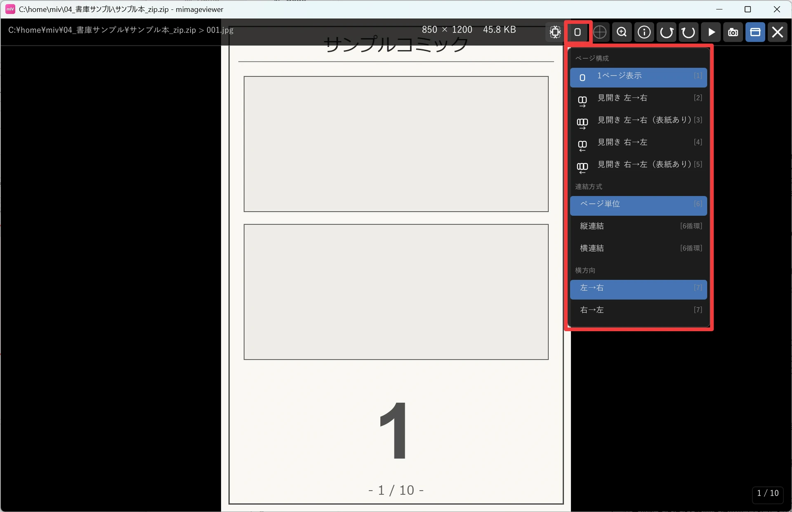
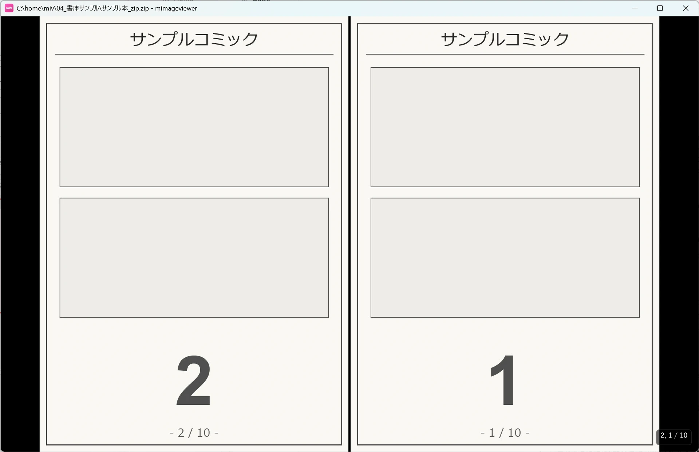

見開きで漫画を読む
漫画やスキャン画像集を、本のように 2 ページ並べて読める機能です。読む方向（左から右／右から左）を選べるほか、 表紙のせいでページの組み合わせがずれてしまったときの直し方も覚えておくと快適に読めます。
見開き表示を始める
ホバーバーの表示モード切替ボタンをクリックし、モード一覧のポップアップから切り替えます （数字キー 1〜5 でも切り替えられます）。 ポップアップにはショートカットキーが併記されているので、確認しながら選べます。
| キー | モード | ページの並び |
|---|---|---|
| 1 | 1ページ表示 | 通常の単独表示 |
| 2 | 見開き 左→右 | [1,2] [3,4] [5,6] ... |
| 3 | 見開き 左→右（表紙あり） | [1] [2,3] [4,5] ... |
| 4 | 見開き 右→左 | [2,1] [4,3] [6,5] ...（← キーで次のページへ進む） |
| 5 | 見開き 右→左（表紙あり） | [1] [3,2] [5,4] ...（← キーで次のページへ進む） |

見開き表示中は、矢印キー・マウスホイール・クリック・スライドショーのいずれで送っても 2 ページずつ進みます。
右綴じ・左綴じを切り替える
洋書のように左から右へ読む本は「見開き 左→右」（2 / 3）、 日本の漫画のように右から左へ読む本は「見開き 右→左」（4 / 5）を選びます。 7 キーでも左→右 / 右→左をすばやく切り替えられます。
右→左モードでは矢印キーの意味が反転し、← が次のページ、→ が前のページになります（漫画の読み方向と一致します）。 ↑ / ↓ キーはそのままです。

画面右下には現在ページ / 総ページ数が表示されます。左→右表示では 12-13 / 180、
右→左表示では 13,12 / 180 のように、画面上で左に見えているページから順に表記されます。
表紙や先頭ページのズレを直す
表紙が単独ページになっている本を見開き表示すると、2ページ目以降の組み合わせが 1 ページぶんずれてしまうことがあります。 直し方は 2 通りあります。
- 表紙を単独ページのまま表示したい場合は、最初から「見開き 左→右（表紙あり）」（3）または「見開き 右→左（表紙あり）」（5）を選びます。1ページ目だけ単独表示され、2ページ目以降がペアになります。
- すでに見開き表示中で組み合わせがずれてしまった場合は、Ctrl+← / Ctrl+→ を押します。押すたびに見開きが 1 ページぶんずれて合わせ直されます（右→左表示では左右の意味が反転します）。